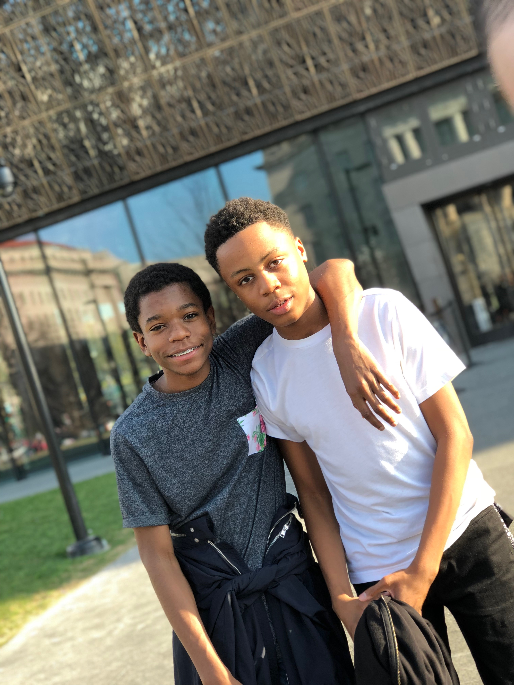
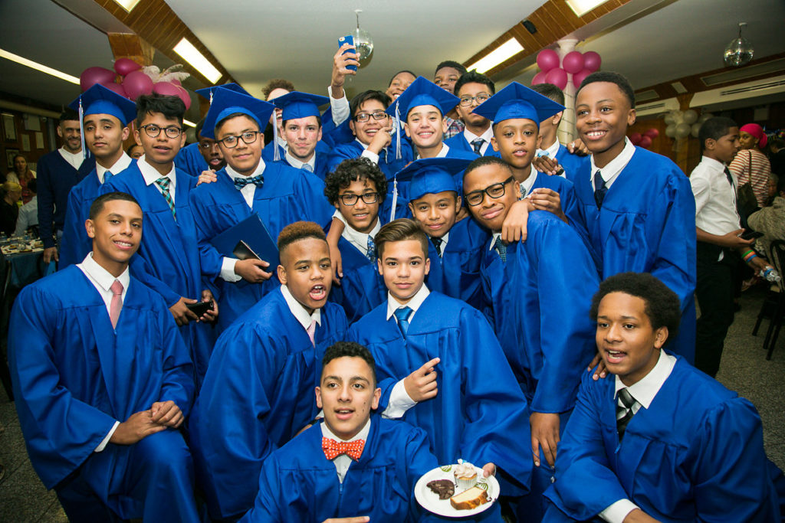

As you already know, my name is Michael Newby and was born and raised in Harlem, NY. I grew up with a twin brother and a younger sister. The first school that I went to was The Red Balloon School in Harlem for pre-k. This is where I met my life-long bestfriend.

The next year, I moved on to go to P.S. 87 on the upper west side. There, I found myself drawing a lot. It eventually became something I was really good at. After 3rd grade, I switched schools to attend George Jackson Academy, a start-up, predominantly black, all boys private school.
I knew absolutely nothing about this school, but I was not excited about leaving P.S. 87. Nothing too special happened in public school, but I enjoyed the people I had met there. At GJA, I stopped drawing and I started to get interested in music. I made many mistakes, just like anyone else does, but over my years at GJA, I grew to learn from them and that played a huge roll in making me the person I am today.
After graduating, I went on to attend my current school, the Trevor Day School, a predominantly white school. For me, switching to this school was a MAJOR culture shock, but it was also where I discovered my love of track. Although, I came from a totally different background than most of the other students in the PWI (Predominantly White Insitution), I was able to find a small group of people who I had a lot in common with. After a short period of time, they became my core group of friends in and out of school.